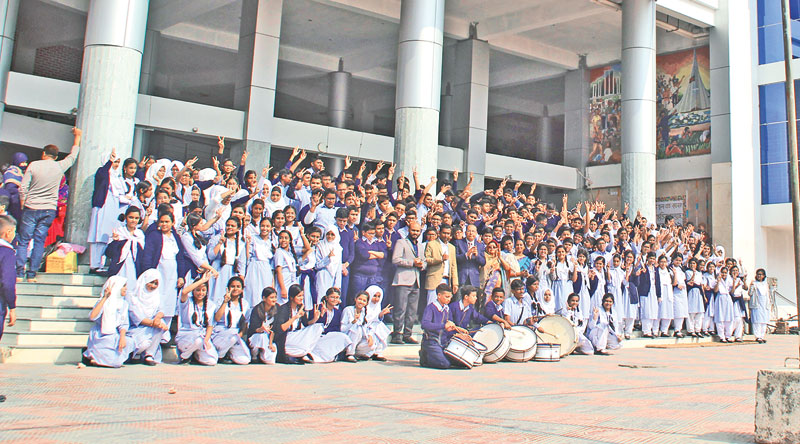
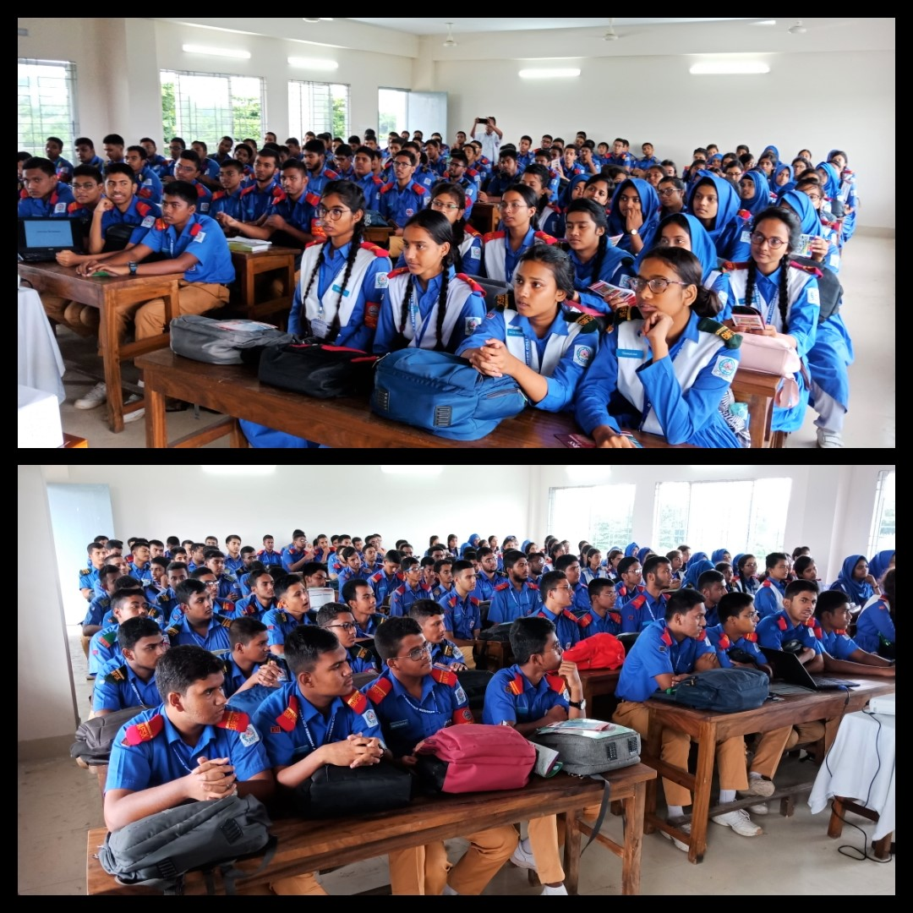

Biotech Engineering Student
Brac University
2025 - Present
BAF Shaheen College
2023 - 2024
South Point School and College
2012 - 2022

South Point School and College

BAF Shaheen College
Actively participated in tree plantation and clean-up drives to promote environmental sustainability.Assisted in organizing awareness programs on climate change and waste management.
My name is Maknoon Khan. I was born and raised in Dhaka.I have been passionate about Biotechnology since my early years. I completed my primary and secondary education at South Point School and College, and obtained my Higher Secondary Certificate from BAF Shaheen College.I am currently pursuing my undergraduate studies at Brac University, where I am honing my skills and knowledge in the field of Biotechnology. I am dedicated to academic excellence and have received a merit scholarship for my achievements. Beyond academics, I am an avid reader of fictional books and enjoy writing stories and poems, which have earned me recognition in various competitions. I am also actively involved in extracurricular activities, particularly in environmental awareness campaigns, where I contribute to promoting sustainability and organizing community initiatives. With a strong foundation in both academics and extracurricular pursuits, I am committed to making a positive impact in the field of Biotechnology and beyond.